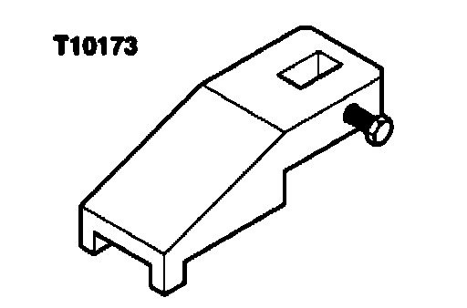
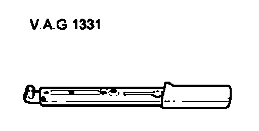
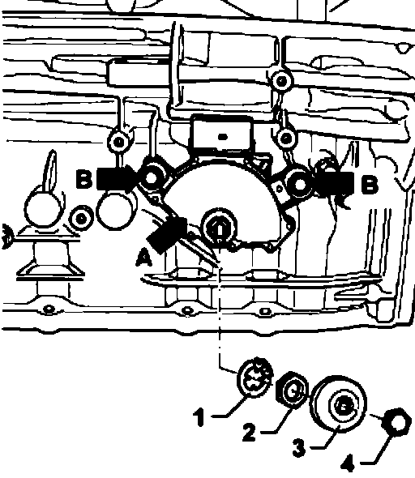
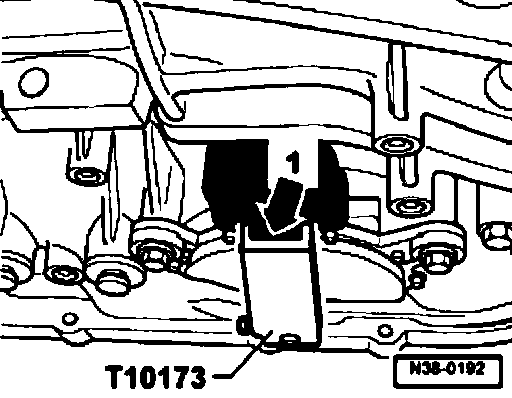
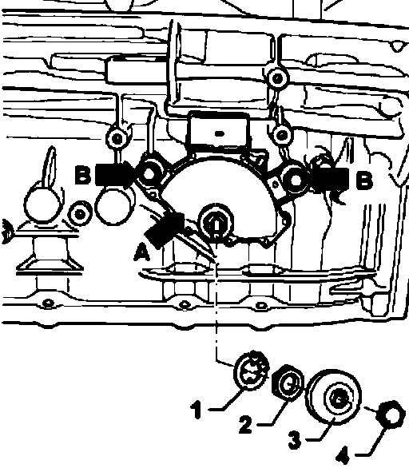

Transmission Position Sensor/Switch: Adjustments
Multi-function transmission range (TR) switch F125, removing, installing and adjusting
Special tools, testers and auxiliary items required

^ Setting gauge T10173

^ Torque wrench V.A.G1 331
Removing
For clarity, the transmission is shown removed throughout this procedure.
- Shift selector lever into "P" position.
- Remove cap nut - 4 -.
- Remove cover - 3 - from selector shaft.
- Carefully bend hooks of circlip - 1 - using a screwdriver.
Note:
^ If one hook breaks, the circlip must be replaced.
- Remove nut - 2 - and circlip - 1 - from selector shaft.
- Disconnect connector from multi-function Transmission Range (TR) switch F125.
- Remove and remove multi-function transmission range switch - arrow A - from selector shaft.
Installing and adjusting multi-function TR switch
- Shift lever/selector shaft on transmission to position "N".
- Install Multi-Function Transmission Range (TR) Switch F125 onto selector shaft.

- Fasten bolts - arrows B - hand tight for multi-function transmission range (TR) switch F125.
- Place setting gauge T10173 onto selector shaft.
- Unhook selector lever cable.

- Turn multi-function Transmission Range (TR) switch - A - until tab of connector - arrow 1 - engages into groove of the setting gauge T10173.

- Fasten bolts - arrows - for multi-function Transmission Range (TR) switch F 125 to 6 Nm.
- Remove setting gauge T10173 from selector shaft.
- Hook in selector lever cable.
Installation is performed in reverse order.
- Check selector lever cable adjustment.